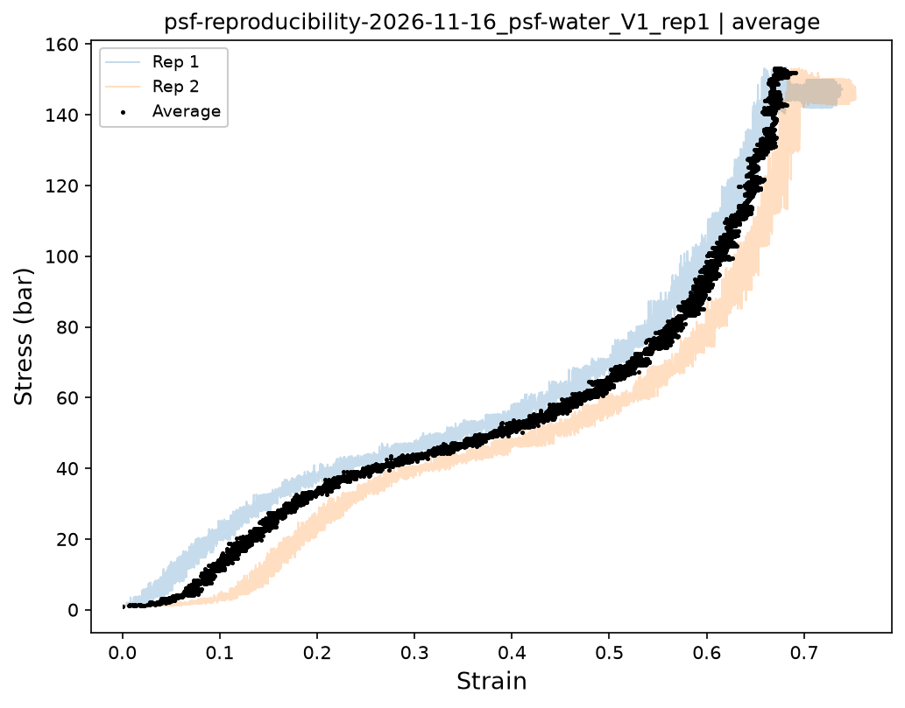
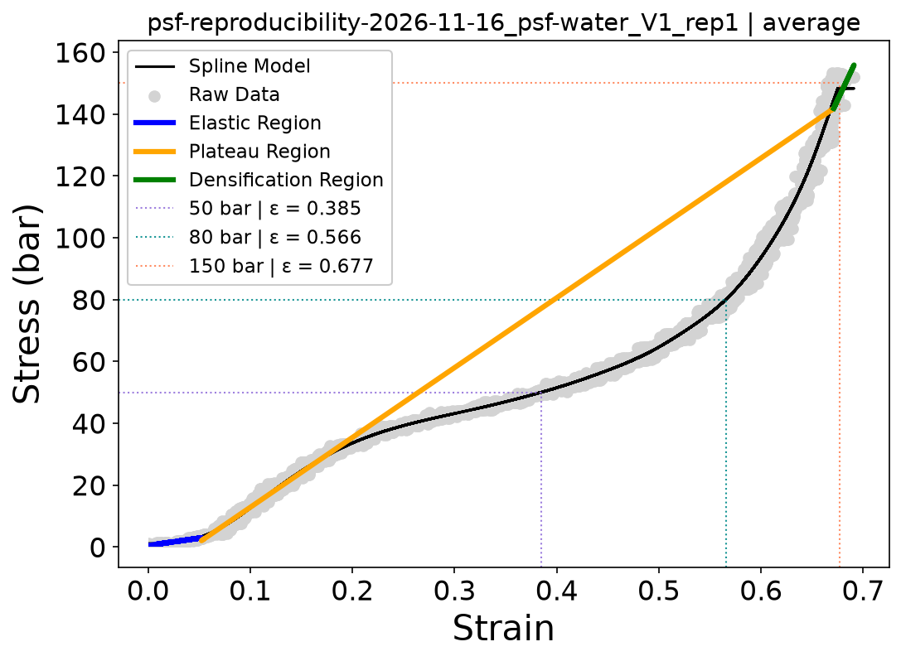

V1 ? repeat 1
Raw data folder ? Frozen recipe ? Plot folder




| Test ID | Good fit | Fit score | Thickness (?m) | Modulus (bar) | Yield (bar) |
|---|---|---|---|---|---|
| sample 5 | True | 89.00 | 132.67 | 227.08 | 32.55 |
| sample 6 | True | 88.00 | 132.62 | 234.82 | 34.17 |
Fit diagnostics and curve comparisons
- averageFits/Derivatives_average_fit_average.png
- averageFits/Unsubtracted_average_fit_average.png
- averageFits/Unsubtracted_Derivatives_average_fit_average.png
- Comparison_CV.png
- rep-1/Derivatives_rep-1.png
- rep-1/Pre-Processing_rep-1.png
- rep-1/Segmentation_rep-1.png
- rep-1/Unsubtracted_Derivatives_rep-1.png
- rep-1/Unsubtracted_Segmentation_rep-1.png
- rep-2/Derivatives_rep-2.png
- rep-2/Pre-Processing_rep-2.png
- rep-2/Segmentation_rep-2.png
- rep-2/Unsubtracted_Derivatives_rep-2.png
- rep-2/Unsubtracted_Segmentation_rep-2.png